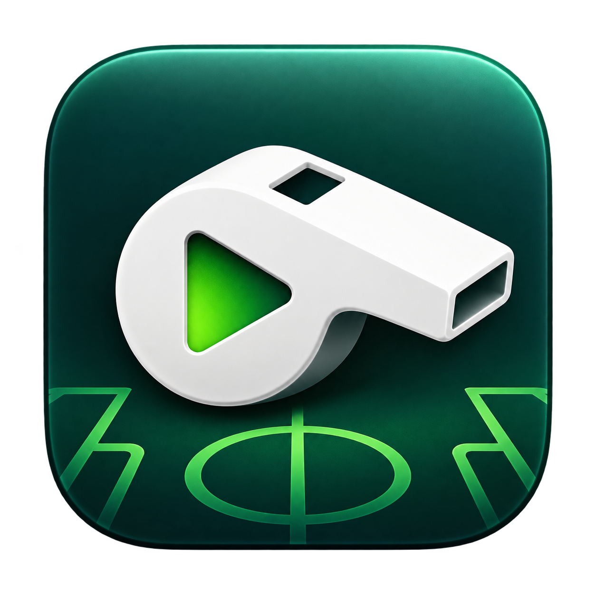

Für deinen Mac
Apple Silicon (M1 oder neuer)
macOS 26 oder neuer · ca. 92 MB
Qt und FFmpeg sind enthalten. Keine separate Installation dieser Werkzeuge erforderlich.
Versionshinweise und Prüfsumme
REFEREE / CUTSpielvideo öffnen, die entscheidende Szene auswählen und mit Zeitlupe, Standbild und Zoom als Clip exportieren. Die Verarbeitung läuft auf deinem Rechner.
In- und Out-Punkte setzen und relevante Szenen im Projekt sammeln.
Wiederholung, Zeitlupe, Standbild und Zoom für die Spielanalyse kombinieren.
Clips als Video speichern. Lokale Aufnahmen werden nicht auf einen Server hochgeladen.
Apple Silicon (M1 oder neuer)
macOS 26 oder neuer · ca. 92 MB
Qt und FFmpeg sind enthalten. Keine separate Installation dieser Werkzeuge erforderlich.
Versionshinweise und PrüfsummeDie neue Version 0.3.0 wird für Windows x64 vorbereitet. Installer und Start auf Windows müssen noch geprüft werden.
Ein Download wird hier ergänzt, sobald ein geprüfter Build vorliegt.